Week 2 Lab: Introduction to Tableau

This Lab Contributes to Course Objectives: 2, 3, 4, 5, 8
Learning Objectives Tableau
Describe the flow of analysis in Tableau Desktop
Identify key areas of the Tableau Desktop workspace
Demonstrate how to connect Tableau to a database
Identify the role and type of data fields
Choose an appropriate data visualization based on a business scenario and audience.
Build a simple data visualization
Demonstrate how to share your data visualization
Identify the function of items on the Tableau Toolbar
Create sorted, stacked, and bar in bar charts
Understand the functions of the
MarksandFilterscardsCreate calculated fields
Explain what it means to group your data
Apply formatting features to make your visualization more effective
Create line charts
Manipulate date-time fields
Tableau Setup
We will be using two Tableau products in this course (although there are many more - see handout): Tableau Desktop and Tableau Public. Tableau desktop typically requires a paid subscription, but as students (and teachers) we get it for free.
Visit Tableau Desktop and download Tableau Desktop using the 14-day free trial. You can enter your product license key once you receive an email with your academic license.
Visit Tableau Public and create an account. You will use this account to host your data visualizations, which you can then embed on your google site. You will be required to use this to upload homework assignments.
If you are ever feeling lost in this class, I recommend checking out some of Tableau’s free eLearning resources. We will use some videos from these trainings throughout the course and I am happy to recommend specific resources to fit your needs.
The Tableau Workflow
Connect -> Analyze -> Share
Video: The Tableau Desktop Workflow [Est. Time: 4 hours]
Part 1: Connect
You will connect to your data on the Data Source Page following these steps:
Establish a connection
View available sheets
Select the first sheet you want to work with
View and edit sheet metadata
Connect additional sheets (optional)
1. Establish a connection
Download supermarket_sales.csv and save it to a new folder in your working directory called arec330_lab_02.
Locate To a File under the Connect toolbar and select Text file.
Note: Files that end in .csv are considered text files. The extension .csv stands for comma-separated values which allows data to be saved in a table structured format, even though it can easily be read in by Microsoft Excel and look very similar to files ending in .xls or .xlsx.
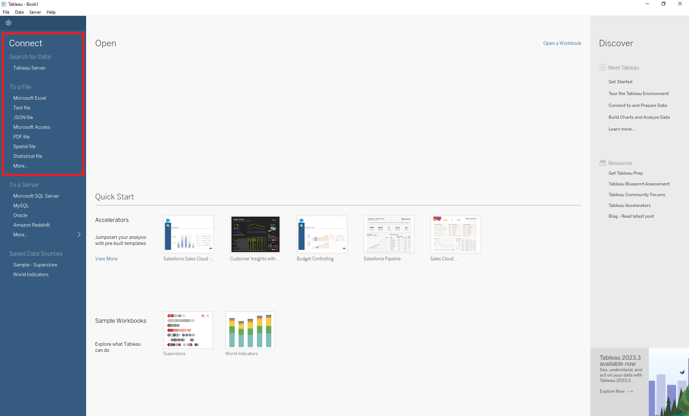 After the data is connected, it’s time to save your work. Save the Tableau workbook as arec330_lab_02.twb in the same working directory (Note: You might have to navigate to the appropriate folder in your Windows Explorer or Finder). The default extension will be .twb so there shouldn’t be a need to change the extension.
Tip: Make sure you select Extract (located in the upper right corner). In Tableau, live connections are dynamic and provide real-time updates, while extracts are snapshots of data that need to be refreshed. If your data file is not expected to change, then extracting will be preferred.
Note: When extracting data, you will be prompted to save a file ending in .hyper. Save this file to the same folder where you saved your data (in this case, arec330_lab_02).
2. View available sheets
Once the data is connected, you will auto-magically be taken to the Data Source Page, where you can view the available sheets. In supermarket_sales.csv there is one sheet.
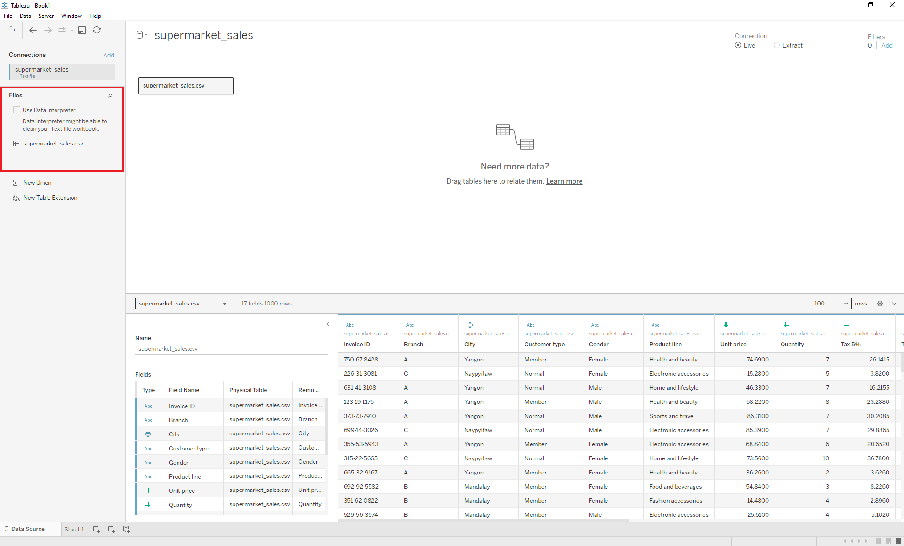
3. Select the first sheet you want to work with
At the bottom of the Data Source Page is where you can toggle between the Data Source Page and the available sheets within the connected data.
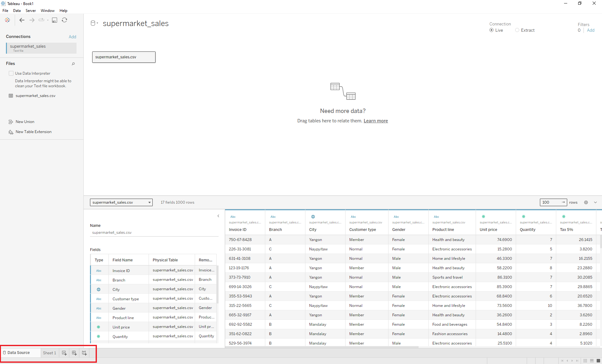 For now, we will remain on the Data Source Page.
4. View and edit sheet metadata
The metadata shows information about the data, such as the field name and data type. You can edit the metadata on this page.
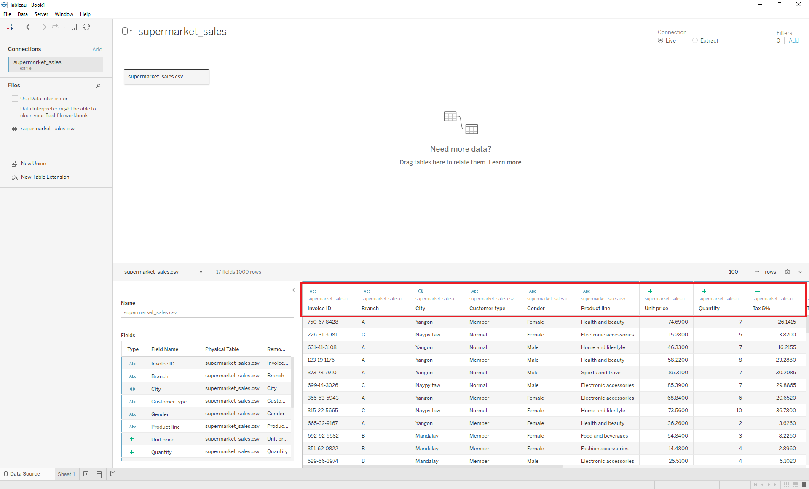 To the left of the metadata and data preview, you will find additional metadata about the data fields. Here you can determine the data type.
You do it: What is the type of the variable Gender?
5. Connect additional sheets (optional)
Later, we will add additional sheets by connecting to new data sets.
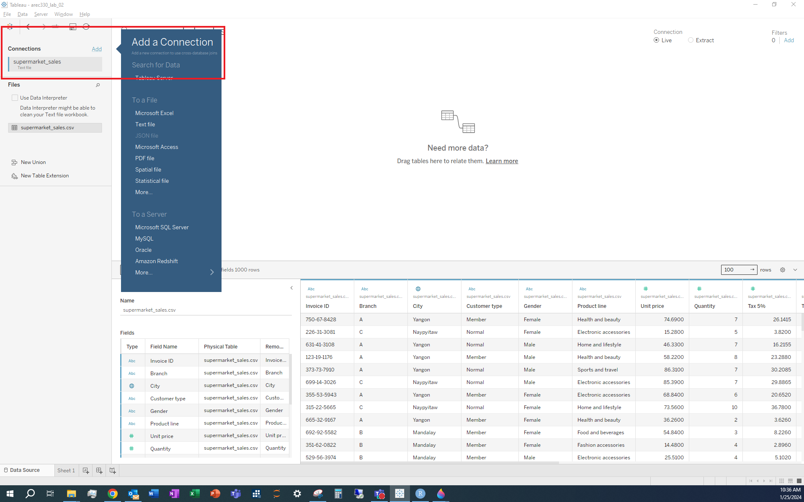
Part 2: Analyze
Analyzing your data in Tableau happens in the worksheet/workspace.
Click on Sheet 1 at the bottom of the Data Source Page. This action brings you to the Worksheets/Workspaces Page.
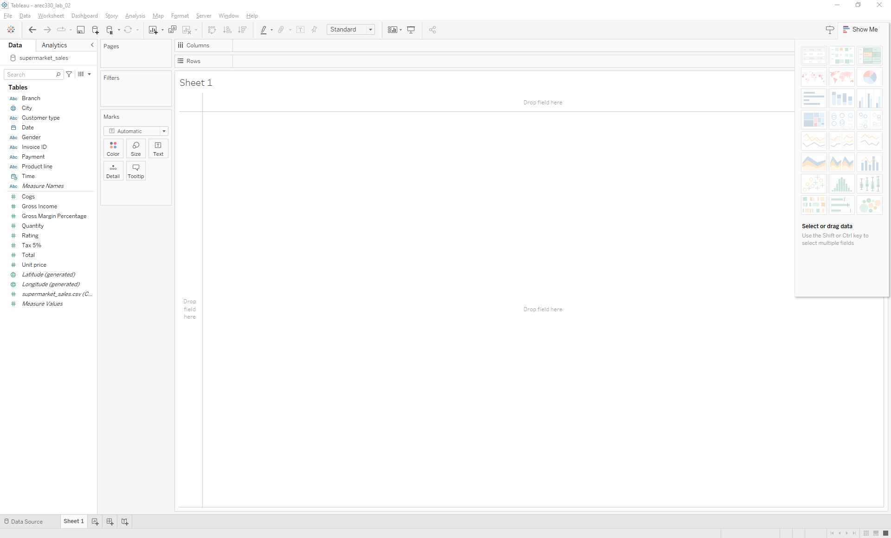
Use the Data Pane to view the data source and explore data fields within a worksheet.
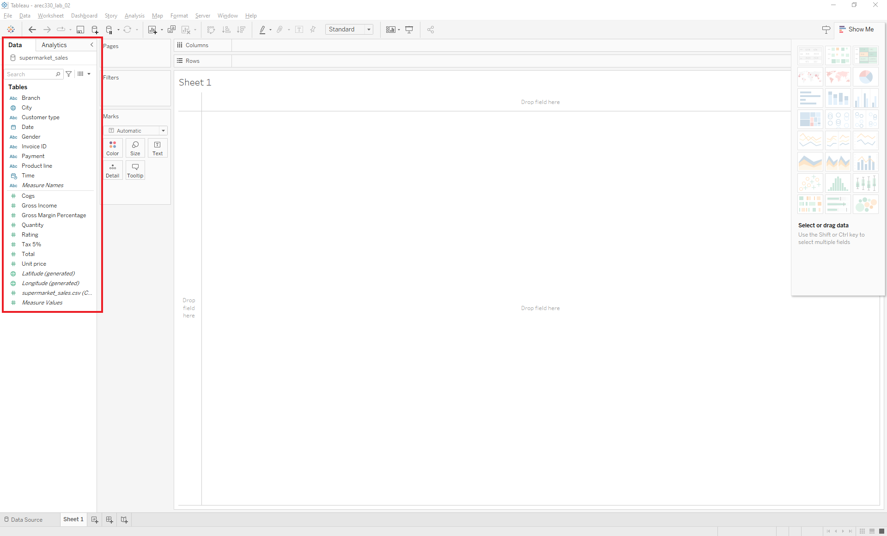
Within the Data pane view, we can determine the role of each data field. Because we have not calculated any variables yet, the two role options are dimensions or measures. Dimensions are qualitative fields (like names, dates, or geographic data) that are typically used to categorize, segment, and reveal the details in your data. They usually appear as rows, columns, or in filters. Measures are quantitative fields (like sales, profits, or counts) that can be aggregated (summed, averaged, etc.). They often provide the numerical values that you analyze.
You do it: What is the role of the variable Gender?
Applying D3M to analyze data in Tableau
Using the Supermarket Sales data, we will construct data visualizations that answer the following questions:
Which product line has the lowest average customer rating?
Does this differ by store branch?
-> What actionable insights does this analysis reveal for the stores?
How have average customer ratings changed over time?
Does this differ by store branch?
-> What actionable insights does this analysis reveal for the stores?
We will be covering the following:
Creating calculated fields
Organizing fields in folders
More advanced bar charts: Sorting
Using the
Markscard and creating groupsFormatting titles, axes, legends, etc.
Exploring the Tableau toolbar
Using the
FilterscardMore advanced bar charts: Stacking
More advanced bar charts: Bar in bar
Intro to line charts and manipulating dates
1. Create calculated fields
We will calculate the total value of the sale using the unit_price and quantity columns, and name the new column subtotal.
Select the icon in the Data pane.
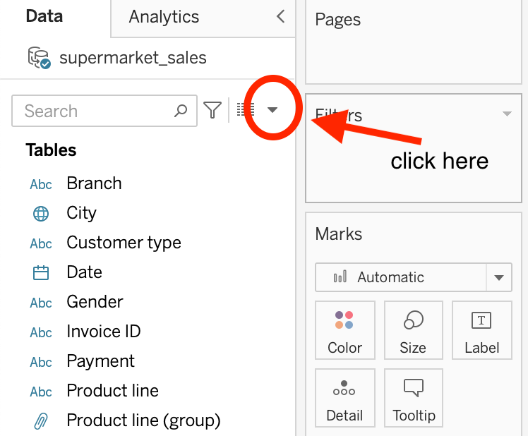
Then select Create Calculated Field...
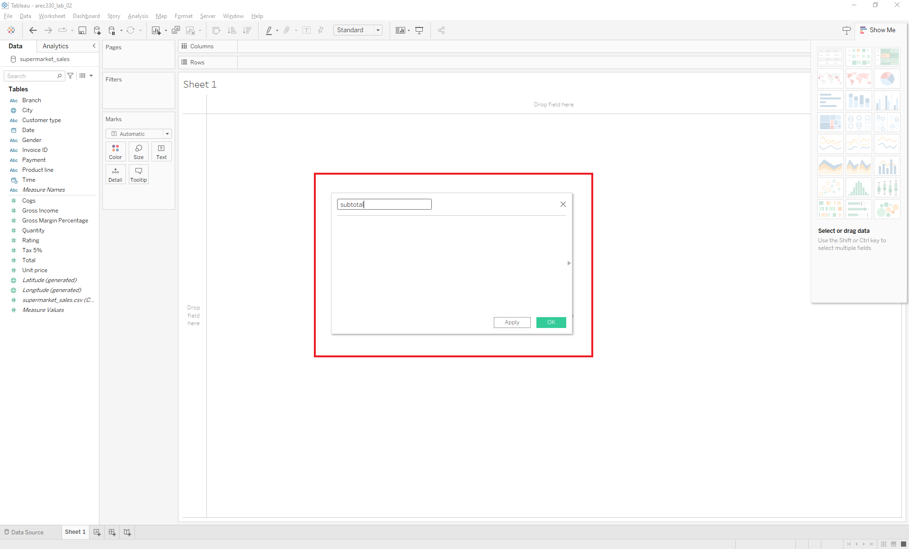
Give your field a useful name (let’s use subtotal).
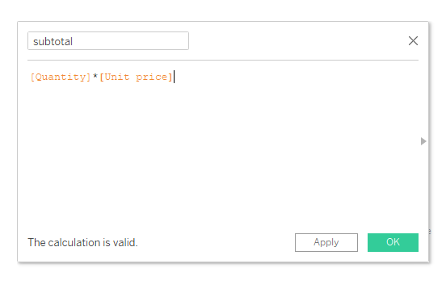
Drag the relevant variables into the box. Type the appropriate function (what symbol do you use to multiply two values?). Click OK. And Voila – the new variable will appear as a new data field in your Data pane.
You do it: Validate that the value labeled tax_5_percent is indeed 5% of the subtotal by creating a new variable called tax_verify.
You do it: Explore some other options for data manipulation by clicking the right triangle in the Create Calculated Field box. Try creating a new variable of your choosing.
2. Organize your data into folders
In Tableau, one way to reduce the number of fields you see if by organizing your data into folders.
Let’s try organizing a few of our data fields into folders.
Step 1: Right-Click a Field.
Start by right-clicking on a field (dimension or measure) in the Data pane that you want to organize into a folder. Let’s pick Product line.
Step 2: Create a New Folder.
After right-clicking, navigate to Folders in the context menu. Select Create Folder... from the submenu.
Note: If you cannot select Folders, you need to first select Group by in the context menu. Then select Folders. The default view in Tableau is Data Source Table.
Step 3: Name Your Folder.
In the dialog that appears, give your new folder a meaningful name that reflects the fields you plan to organize within it. Let’s name the folder Product_Ratings.
Step 4: Add Fields to the Folder.
After creating the folder, you can add other fields to it by right-clicking them, selecting Folders, and then choosing the name of the folder you created.
You do it: Locate the data field Rating and add it to the Product_Rating folder.
Step 5: Select Group by Folder.
To view your fields organized by the folders you’ve created, go to the drop-down menu at the top of the Data pane. Select Group by Folder from this menu. This will organize all fields in the Data pane into their respective folders.
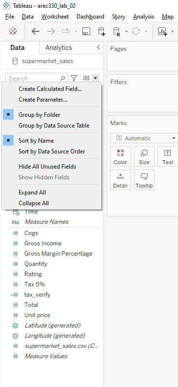
Note: Remember that organizing fields into folders is just for convenience and does not affect how you can combine data in your visualizations. You can still use fields from different folders together in your visualizations.
3. Visualizing data with bar charts
Suppose we want to look at average customer ratings by product line.
What are some ways we could visualize this to answer the question “Which product line has the lowest average customer rating?”
Locate the Columns and Rows Shelves in workspace. The Columns and Rows Shelves are used to create a structure for your visualization.
Suppose we want to create a vertical bar chart. Simply drag Product line into the Columns shelf and Rating into the Rows shelf.
What did you notice? Aside from a vertical bar chart appearing, the Measure of Rating defaulted to SUM. If we want the average, we need to change the measure by clicking on the dropdown menu next to SUM(Rating), select Measure (Sum), and change this to Average.
You do it: Suppose now that we wanted to display this in a horizontal bar chart. What would you need to alter?
4. Sorting bar charts
Title, adding color to highlight the top category, making font larger and easier to read, maybe changing axis range
You can sort the data so that the category with the highest rating is first, and the category with the lowest rating is last, using either the toolbar or the icon next to the y-axis label.
Option 1: Using the Toolbar
- Click on the bar chart you want to sort.
- Look for the toolbar at the top of the Tableau workspace.
- In the toolbar, find the sort button, which typically looks like a pair of bars with an arrow pointing either up or down.
- Click the sort button to sort the data. Clicking once will sort it in one direction (e.g., lowest to highest), and clicking again will reverse the sort order (e.g., highest to lowest).
Option 2: Using the Icon Next to the Y-Axis Label
- Click on your bar chart.
- Find the y-axis (vertical axis) label. This is usually where your categories or group names are listed.
- Next to the axis label, there should be a small sort icon. This icon is usually an arrow or a pair of arrows pointing up and down.
- Click on this icon to sort the bars. The first click sorts in ascending order (lowest to highest), the second click sorts in descending order (highest to lowest), and the third click restores it to its default ordering.
You do it: Sort the data so that the category with the highest rating is first and the category with the lowest rating is last.
5. Using the marks card
Using colors
What if we want to use color to highlight the top category?
There are a few ways to do this:
Drag
Product linetoColoron the Marks card (then edit colors)Right click the bar you want to stand out and click
Group(then edit colors)
You do it: Locate the product line with the highest rating and highlight the category with a different color.
Adding labels
What if we want to add labels with the value of the rating?
- Select
Labelin the Marks card -> checkShow mark labels
You do it: Show mark labels and click around with the other options on the label card. What formatting do you like best?
Formatting the bars
What if we want to change the width of our bars?
- Select
Sizein the Marks card -> Adjust (moving cursor to the right widens the bars)
Displaying additional information
By default, hovering your cursor over the bars will display information. What if we want to add extra info on the box that appears when we hover over a bar?
- Select
Tooltipin the Marks card -> Click onInsert
You do it: Try adding some text to the tooltip. What else can you add to the tooltip?
6. Formatting titles, axes, legends, etc.
Adjusting the scale of the y-axis
What if we want to adjust the scale of the y-axis so that differences across the bars are easier to see?
Right click the y-axis
Click
Edit AxisUnder
RangeselectCustom. Set an appropriate range by selecting appropriate values forFixed startandFixed end.
Challenge question: What if we want to compare customer ratings across branches? Does the product line with the top ratings vary by store?
You do it: Highlight the product line with the top rating at branch A. How does this rank in the other branches?
Changing the formatting of the axis labels
What if we want to change the font size (or color, etc.) of the axis labels?
Right click the axis you want to edit
Click
Format
Renaming fields
What if instead of having Branch / Product line at the top of the bar chart, we want to rename A as Branch A, B as Branch B, and C as Branch C?
Right click Branch / Product line -> Select
Hide Field Labels for ColumnsRight click
Branchin the Columns shelf -> SelectEdit Aliases...Rename each branch under the column titled
Value (Alias)
Changing or hiding legends
What if we want to remove the legend?
Annotating the bar chart
Adding a caption that describes details about your visualization.
Right click the blank area of the visualization
Select
Annotate-> Select eitherPointorArea
– By selecting Area you can add text to comment about a specific region of a visualization.
– By selecting Point you can call out a specific data point in the visualization.
Note: There are many other features to explore in the Tableau toolbar. Hover over each icon in the toolbar and click to explore.
8. Using the filters card
What if we want to recreate our analysis of ratings for female customers only?
First, let’s duplicate the existing worksheet.
Locate your active sheet (this should be called Sheet 1)
Right click and select
Duplicate
Your new active worksheet will be Sheet 1 (2).
Now, let’s add a filter for females:
Drag the field
Genderto theFilterscardSelect
Female
9. Stacking bar charts
What if you want to see total sales split by gender and purchase category?
You do it: Create a visualization (in a new sheet) that shows total sales (Total) by Gender and Product line.
What if, instead, we want to see this in terms of the percent of total sales within each category are from females vs. males?
First, let’s try stacking our bars and adding labels:
Move
Genderfrom the Columns shelf and drag it to theColoricon on theMarkscardSelect
Labelfrom theMarkscard -> CheckShow mark labelsto display the value of total sales for males and females
Next, convert this display to see the percent of total sales that are from males and females:
Click the drop down menu next to SUM(Total) on the Rows shelf
Select
Quick Table Calculation->Percent of Total
This gives us the percentage of total sales that are from males and females, but as a percent of all sales.
What if we want to see the percent of total sales within each category that are from males and females?
We need to create a 100% stacked bar chart.
Click the drop down menu next to SUM(Total) on the Rows shelf
Select
Compute Using->Gender
Note: The default is Table (across).
10. Creating bar in bar charts
Another way to compare sales for males and females is to use a bar in bar chart. This will allow you to easily see whether total sales are higher for males or females.
Duplicate the 100% stacked bar chart by right-clicking on Sheet 2 and selecting
DuplicateDrag
Genderto theSizeicon in theMarkscardFrom the toolbar, click
Analysis->Stack Marks-> and selectOff
Challenge question: What if we want to swap which gender is the wide bar and which is the narrow bar?
11. Basic line charts and datetime
The second type of chart we will learn to create is a line chart.
Suppose we want to see trends in sales over time:
Open a new worksheet
Drag
Totalto the Rows shelf andDateto the Columns shelfClick the drop down menu next to
DateSelect
Week Number
Challenge question: There are two options for each date display option. What is the difference between these fields?
You do it: Explore the other date display options. Which do you like best for this analysis?
What if we want to see trends in sales across months?
Let’s look at two options for doing this.
Side-by-side lines:
Double click
Dateto add to to the Columns shelf, and dragTotalto the Rows shelf.Set the aggregation to
MONTH(Date)in the Columns shelf andSUM(Total)in the Rows shelf.Double click the
Datefield (again) in the Data pane. This will add it to the Columns shelf.Click the drop down menu on the
YEAR(Date)field on the Columns shelf and selectDay
Combined lines:
- Drag
MONTH(Date)to the colors card
- Drag
Note: Both date values need to be dimensions.
You do it: You will notice that a new Path icon now appears on the Marks card. Experiment with different line types.
12. Adding trend lines
To add trend lines, from the toolbar select Analysis -> Trend Lines -> Show Trend Lines
For next time: What are trend lines?
Part 3: Share
You will share your worksheet on Tableau Public by following these steps:
- Connect Tableau Desktop to your Tableau Public account.
- On the toolbar, locate
Server-> clickTableau Public
- Publish your work to your account. There are two ways to do this:
Server->Publish WorkbookServer ->Tableau Public->Save to Tableau Public`
You should also save a local copy of your work as a Tableau Workbook. There are two ways to do this:
On the toolbar, locate
File-> clickSaveClick the floppy disk icon (
 ) at the top of the page
) at the top of the page
- Embed your visualization in your Google website.
Review Questions
Which payment type has the highest total spending?
Do more females or more males use this payment type?
Which payment type has seen the greatest increase in total spending over time?
For a challenge: Which payment type has seen the greatest increase in the number of customers using it over time?